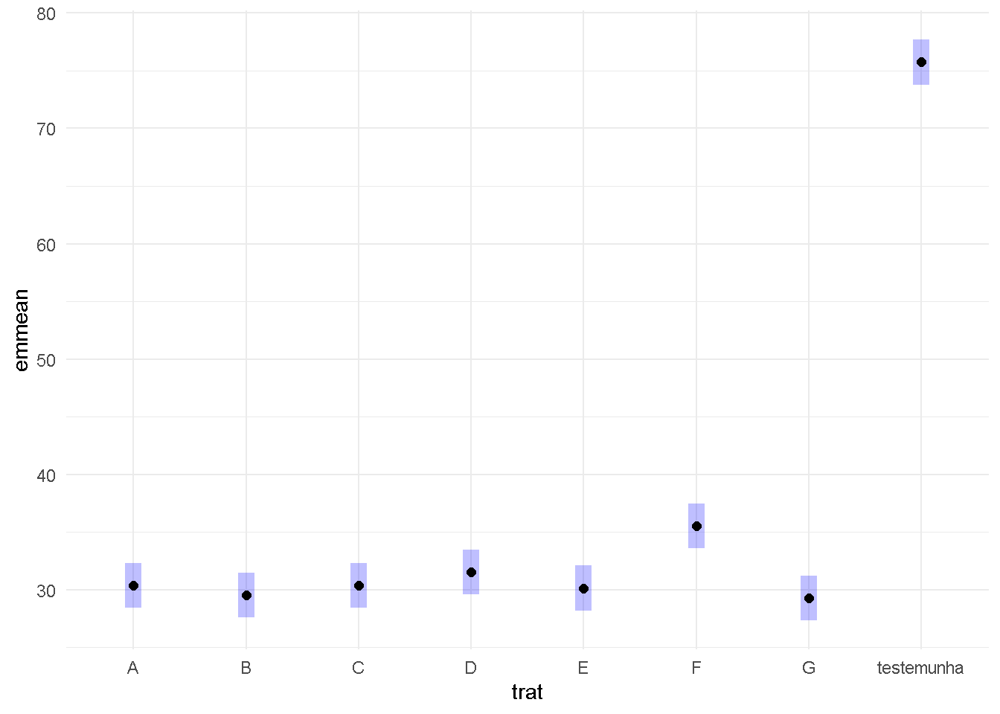

library(readxl)
library(tidyverse)
fungicidas <-
read_excel("dados-diversos.xlsx", "fungicida_campo")Blocos e Parcelas Subdivididas
Blocos Casualizados
Modelos anova com bloco:
aov_fung <- aov(sev~trat + rep, data = fungicidas)
summary(aov_fung) Df Sum Sq Mean Sq F value Pr(>F)
trat 7 7135 1019.3 287.661 <2e-16 ***
rep 1 19 18.6 5.239 0.0316 *
Residuals 23 81 3.5
---
Signif. codes: 0 '***' 0.001 '**' 0.01 '*' 0.05 '.' 0.1 ' ' 1Verificar as premissas e estimar os valores médios:
library(performance)
library(DHARMa)
check_normality(aov_fung)OK: residuals appear as normally distributed (p = 0.230).check_heteroscedasticity(aov_fung)OK: Error variance appears to be homoscedastic (p = 0.484).#plot(simulateResiduals(aov_fung))
library(emmeans)
means_fung <- emmeans(aov_fung, ~trat)
library(multcomp)
library(multcompView)
cld(means_fung) trat emmean SE df lower.CL upper.CL .group
G 29.2 0.941 23 27.3 31.2 1
B 29.5 0.941 23 27.6 31.4 1
E 30.1 0.941 23 28.2 32.1 1
C 30.4 0.941 23 28.4 32.3 1
A 30.4 0.941 23 28.4 32.3 1
D 31.5 0.941 23 29.6 33.4 12
F 35.5 0.941 23 33.6 37.4 2
testemunha 75.8 0.941 23 73.8 77.7 3
Confidence level used: 0.95
P value adjustment: tukey method for comparing a family of 8 estimates
significance level used: alpha = 0.05
NOTE: If two or more means share the same grouping symbol,
then we cannot show them to be different.
But we also did not show them to be the same. plot(means_fung)+
coord_flip()+
theme_minimal()
Parcelas subdividida (splitoplot):
milho <- read_excel("dados-diversos.xlsx", "milho")
##Base R
#dbc
#
aov_milho_bloco <- aov(index ~ factor(block) + hybrid*method +
Error(factor(block)/hybrid/method), data = milho)
summary(aov_milho_bloco)
Error: factor(block)
Df Sum Sq Mean Sq
factor(block) 3 592.2 197.4
Error: factor(block):hybrid
Df Sum Sq Mean Sq F value Pr(>F)
hybrid 5 974.2 194.84 3.14 0.0389 *
Residuals 15 930.9 62.06
---
Signif. codes: 0 '***' 0.001 '**' 0.01 '*' 0.05 '.' 0.1 ' ' 1
Error: factor(block):hybrid:method
Df Sum Sq Mean Sq F value Pr(>F)
method 1 79.61 79.61 4.726 0.0433 *
hybrid:method 5 265.28 53.06 3.150 0.0324 *
Residuals 18 303.18 16.84
---
Signif. codes: 0 '***' 0.001 '**' 0.01 '*' 0.05 '.' 0.1 ' ' 1library(car)
library(lme4)
milho$block <- as.factor(milho$block)
mix2 <- lmer (index~block + hybrid*method +
(1|block/hybrid), data = milho)
anova(mix2)Analysis of Variance Table
npar Sum Sq Mean Sq F value
block 3 5.376 1.792 0.1064
hybrid 5 264.420 52.884 3.1397
method 1 79.606 79.606 4.7262
hybrid:method 5 265.281 53.056 3.1500check_normality(mix2)OK: residuals appear as normally distributed (p = 0.621).check_heteroscedasticity(mix2)Warning: Heteroscedasticity (non-constant error variance) detected (p = 0.009).Corrigido:
library(lme4)
# using blocks
milho$block <- as.factor(milho$block)
mix2 <- lmer(sqrt(index) ~ block + hybrid*method + (1|block/hybrid), data = milho)
library(car)
Anova(mix2)Analysis of Deviance Table (Type II Wald chisquare tests)
Response: sqrt(index)
Chisq Df Pr(>Chisq)
block 0.0764 3 0.994506
hybrid 15.4171 5 0.008721 **
method 3.9239 1 0.047605 *
hybrid:method 13.3025 5 0.020703 *
---
Signif. codes: 0 '***' 0.001 '**' 0.01 '*' 0.05 '.' 0.1 ' ' 1check_normality(mix2)OK: residuals appear as normally distributed (p = 0.422).check_heteroscedasticity(mix2)OK: Error variance appears to be homoscedastic (p = 0.970).means_mix2 <- emmeans(mix2, ~ hybrid | method)
means_mix2method = pin:
hybrid emmean SE df lower.CL upper.CL
30F53 HX 5.00 1.17 5356 2.69 7.30
30F53 YH 4.95 1.17 5356 2.65 7.25
30K64 4.50 1.17 5356 2.20 6.81
30S31H 6.10 1.17 5356 3.79 8.40
30S31YH 5.63 1.17 5356 3.33 7.93
BG7049H 4.40 1.17 5356 2.10 6.71
method = silk:
hybrid emmean SE df lower.CL upper.CL
30F53 HX 4.94 1.17 5356 2.64 7.25
30F53 YH 5.10 1.17 5356 2.80 7.41
30K64 4.61 1.17 5356 2.31 6.91
30S31H 5.13 1.17 5356 2.83 7.43
30S31YH 5.14 1.17 5356 2.84 7.44
BG7049H 4.37 1.17 5356 2.07 6.67
Results are averaged over the levels of: block
Degrees-of-freedom method: kenward-roger
Results are given on the sqrt (not the response) scale.
Confidence level used: 0.95 cld(means_mix2)method = pin:
hybrid emmean SE df lower.CL upper.CL .group
BG7049H 4.40 1.17 5356 2.10 6.71 1
30K64 4.50 1.17 5356 2.20 6.81 1
30F53 YH 4.95 1.17 5356 2.65 7.25 12
30F53 HX 5.00 1.17 5356 2.69 7.30 12
30S31YH 5.63 1.17 5356 3.33 7.93 12
30S31H 6.10 1.17 5356 3.79 8.40 2
method = silk:
hybrid emmean SE df lower.CL upper.CL .group
BG7049H 4.37 1.17 5356 2.07 6.67 1
30K64 4.61 1.17 5356 2.31 6.91 1
30F53 HX 4.94 1.17 5356 2.64 7.25 1
30F53 YH 5.10 1.17 5356 2.80 7.41 1
30S31H 5.13 1.17 5356 2.83 7.43 1
30S31YH 5.14 1.17 5356 2.84 7.44 1
Results are averaged over the levels of: block
Degrees-of-freedom method: kenward-roger
Results are given on the sqrt (not the response) scale.
Confidence level used: 0.95
Note: contrasts are still on the sqrt scale
P value adjustment: tukey method for comparing a family of 6 estimates
significance level used: alpha = 0.05
NOTE: If two or more means share the same grouping symbol,
then we cannot show them to be different.
But we also did not show them to be the same.